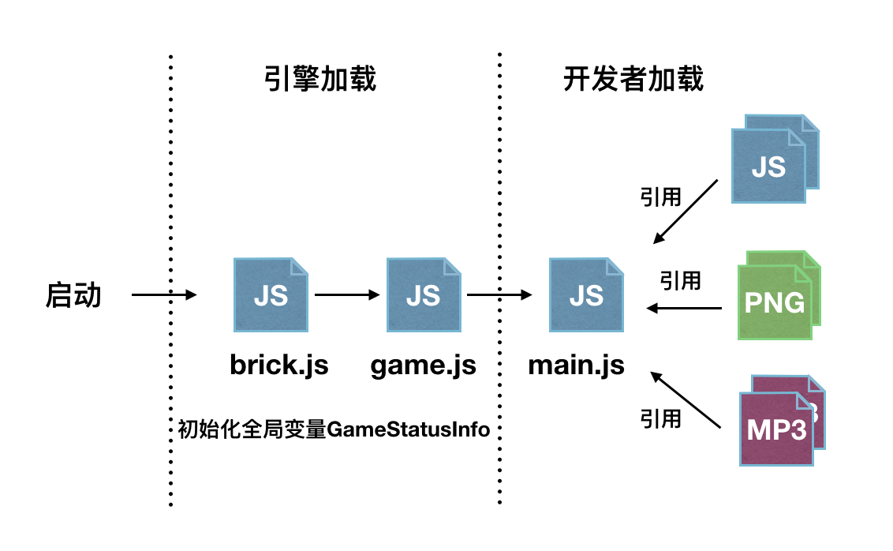

开发概况
如遇ios11的模拟器卡顿，建议将模拟器版本降级到10.3.1Helloworld程序
开门见山，通过一个helloworld程序来学习下bricks引擎。
修改PublicBrickEngineGame/PublicBrickEngineGame/Res/main.js 为如下代码，并运行构建。
下面例子是第一步生成纹理对象，第二步使用纹理对象生成精灵实例，第三步将精灵对象加入到渲染树的根节点进行渲染。
//1.创建一个纹理
var tex = new BK.Texture('GameRes://texture/test.png');
//2.创建一个精灵对象
var sp = new BK.Sprite(100,100, tex,0,1,1,1);
//3.加入到根节点
BK.Director.root.addChild(sp);
接口命名
brick引擎中所有的接口均为BK对象的属性 如 BK.Director，BK.Sprite等
脚本加载流程
引擎启动后，会加载brick.js与game.js脚本，运行完成后，加载开发者编写入口脚本main.js。
对于开发者而言，无需关心brick.js与game.js的加载逻辑。开发者进行游戏打包时，也只需打包引用到的脚本与资源。
工程提供了一些基础的组件与类库，开发者若需引用需主动调用BK.Script.loadlib进行加载，引擎除了加载brick.js与game.js外不会加载其他组件。

全局变量GameStatusInfo
游戏启动后，引擎会为开发者写入名为GameStatusInfo的有关游戏的全局参数
GameStatusInfo = {
"svrIp" : "14.17.42.125", //游戏推荐ip。开发者可忽略
"gameVersion" : "408.2", //游戏版本号
"isMaster" : 1, //是否房主，1房主，0参加者
"dressPath" : [ //厘米秀衣服路径
{
"atlas" : "\/Clothes\/1\/playRes\/dress",
"json" : "\/Clothes\/1\/playRes\/dress"
},
{
"atlas" : "\/Clothes\/2\/playRes\/dress",
"json" : "\/Clothes\/2\/playRes\/dress"
},
{
"atlas" : "\/Clothes\/3\/playRes\/dress",
"json" : "\/Clothes\/3\/playRes\/dress"
},
{
"atlas" : "\/Clothes\/4\/playRes\/dress",
"json" : "\/Clothes\/4\/playRes\/dress"
},
{
"atlas" : "\/Clothes\/5\/playRes\/dress",
"json" : "\/Clothes\/5\/playRes\/dress"
},
{
"atlas" : "\/Clothes\/6\/playRes\/dress",
"json" : "\/Clothes\/6\/playRes\/dress"
},
{
"atlas" : "\/Clothes\/7\/playRes\/dress",
"json" : "\/Clothes\/7\/playRes\/dress"
}
],
"gameId" : 3, //游戏id
"networkType" : 0, //网络类型 1 电信 ，2 联通 ，3 移动 0: wifi或未知
"roomId" : "0", //房间号
"platform" : "ios", //平台类型
"openId" : "72ED98114FE0D68FD23650B303B8AD80", //当前用户的标识
"spriteDesignHeight" : 368, //厘米秀小人spine动画的设计高度
"QQVer" : "7.1.0.0", //手机qq版本
"isFirstPlay" : 1, //是否第一次玩
"skltPath" : { //厘米秀小人spine骨骼
"atlas" : "\/Role\/0\/playRes\/role",
"json" : "\/Role\/0\/playRes\/role"
}
资源路径
脚本中访问脚本或者图片资源时，需以前缀+相对路径的形式进行访问。
游戏中仅有两种资源路径，资源包所在的路径，手Q根据游戏ID分配的沙盒路径。
资源包所在的路径以GameRes://开头，对应的路径为main.js所在的路径。只可读不可写。
沙盒路径以GameSandBox://开头，文件可读可写。可用于存储游戏的存档信息等。
例如有如下的游戏包:
|--main.js
|--res
|--img1.png
|--img2.png
|--lib
|--script1.js
|--script2.js
当需要访问 /lib/script1.js，使用路径为 GameRes://lib/script1.js
加载文件
bricks引擎不支持AMD和CommonJS加载方式。加载其他js文件如下
BK.Script.loadlib("GameRes://lib/script1.js")
错误调试
通过查询log关键字 "Execute JS Error" 可以查询到执行错误的行数和列数，以及文件的具体位置
坐标系与单位
bricks引擎中的坐标系与opengl的坐标系一致。坐标原点在屏幕的左下角，x轴正方向向右，y轴正方向上。 且引擎中所有数值均为实际像素。